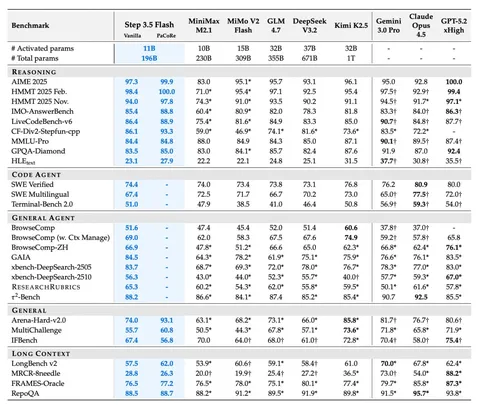

Технический отчёт Step 3.5 Flash — часть 2/2
Продолжаем разбирать техрепорт Step 3.5 Flash. В прошлый раз говорили об архитектуре, в этот — об обучении.
Предварительное обучение состояло из нескольких этапов: pretrain на базовые способности (14,6T токенов, 4K контекст). Сведение (annealing) для усиления рассуждений, кодовых и научных знаний (3T токенов, расширение конекста с 4K до 32K). Первая стадия мидтрейна для навыков SWE и использования тулов (386B токенов, 21% pretrain tokens replay, 32k контекст) и вторая стадия мидтрейна для обучения работе с длинным контекстом и агентскими сценариями (364B токенов, 128K контекст).
Для посттрейна готовят SFT-базу для экспертов в два этапа. Первый — стандартный; включает общие знания, следование инструкциям, математику, код, использование инструментов и так далее. Второй — настройка на узкие темы: экспертная химия и синтетическая арифметика. Финальный датасет состоит из 7,23B токенов, из которых 38,8% — это код. С помощью экспертов генерируют решения на промпты из SFT и заново обучают SFT, но с генерациями экспертов.
После дистилляции экспертов в SFT идёт RL. Авторы долго стремились стабилизировать обучение. Среди причин нестабильности — длинные цепочки ризонинг-генераций с отложенной наградой, возможные «скачки» градиентов при ошибке даже в одном токене и шум, возникающий, если на генерации и обучении вероятности токенов считаются по-разному.
Для стабилизации применяют Metropolized Independent Sampling — выбрасывают из обучения токены со слишком высокой или низкой активностью, а также траектории с геометрическим средним активаций выше или ниже порога. Для обрезанных по длине генераций вместо нулевого реворда берут выход value-модели как оценку возможной награды незавершённых рассуждений. Так даже при 20% оборванных генераций стабильность обучения сохраняется.
Награда считается отдельно для RLVR и RLHF. В первом случае есть две части: rule-based (для каждого среза подобран отдельный verifier) и model-based для STEM-дисциплин на основе OSS-120B со сложным промптом. В RLHF применяется генеративная награда в режиме pairwise, генерации сравниваются с использованием критерия Бредли-Терри, что позволяет уйти от абсолютных значений наград и оптимизироваться на ранжирование ответов модели.
В качестве эталона предположительно используется Replay Buffer. Для улучшения стабильности генерациям с лишним переключением языков, чрезмерной уверенностью и выдуманными цитатами присваивается награда 0. Используется мета-ревард-модель (MetaRM), которая даёт прирост на бенчмарках 0,5–3%. Для обучения реворд-модели используется дополнительный этап SFT, RL не раскрывается. Награда для агентных задач — rubric-based LLM с тернарными суждениями. Выходы ассиметрично проецируются в бинарную награду.
Данные для обучения использованию инструментов не синтезированы внешней LLM. Авторы строят жёсткий граф логики вызова инструментов: например, позволяют редактировать файл только после его открытия. Дальше генерируют данные в цикле Sample-Execute-Verify: модель вызывает инструмент, работает с ним, результаты оцениваются, фильтруются траектории с ошибками. Получается около 100K сценариев на миллиарды токенов с вызовом инструментов и без ошибок.
Для кодовых агентов модель учат генерировать среды в собственном пайплайне на основе SWE-factory. Получают 50 тысяч сред на 20 языках. Также добавляют опенсорные среды вроде SWE-smith и R2E-Gym. Что касается ресёрча и поисковых агентских сценариев, тут интересен метод отбора данных. Step 3.5 обучали только на задачах, которые DeepSeek-R1 не может решить без инструментов. Процесс гарантирует, что для решения задачи необходимо использование поиска.
Модель показывает хорошие результаты в математических бенчах. В других доменах есть просадки,но стоит помнить, что Step 3.5 Flash — значительно меньше многих конкурентов, с которыми сравнивается. В конце мая StepFun выпустила Step 3.7 Flash. Она превосходит версию 3.5 во всех бенчмарках, а в SimpleVQA обходит даже GPT-5.5.
Разбор подготовил❣ Антон Селиванов
Душный NLP
Продолжаем разбирать техрепорт Step 3.5 Flash. В прошлый раз говорили об архитектуре, в этот — об обучении.
Предварительное обучение состояло из нескольких этапов: pretrain на базовые способности (14,6T токенов, 4K контекст). Сведение (annealing) для усиления рассуждений, кодовых и научных знаний (3T токенов, расширение конекста с 4K до 32K). Первая стадия мидтрейна для навыков SWE и использования тулов (386B токенов, 21% pretrain tokens replay, 32k контекст) и вторая стадия мидтрейна для обучения работе с длинным контекстом и агентскими сценариями (364B токенов, 128K контекст).
Для посттрейна готовят SFT-базу для экспертов в два этапа. Первый — стандартный; включает общие знания, следование инструкциям, математику, код, использование инструментов и так далее. Второй — настройка на узкие темы: экспертная химия и синтетическая арифметика. Финальный датасет состоит из 7,23B токенов, из которых 38,8% — это код. С помощью экспертов генерируют решения на промпты из SFT и заново обучают SFT, но с генерациями экспертов.
После дистилляции экспертов в SFT идёт RL. Авторы долго стремились стабилизировать обучение. Среди причин нестабильности — длинные цепочки ризонинг-генераций с отложенной наградой, возможные «скачки» градиентов при ошибке даже в одном токене и шум, возникающий, если на генерации и обучении вероятности токенов считаются по-разному.
Для стабилизации применяют Metropolized Independent Sampling — выбрасывают из обучения токены со слишком высокой или низкой активностью, а также траектории с геометрическим средним активаций выше или ниже порога. Для обрезанных по длине генераций вместо нулевого реворда берут выход value-модели как оценку возможной награды незавершённых рассуждений. Так даже при 20% оборванных генераций стабильность обучения сохраняется.
Награда считается отдельно для RLVR и RLHF. В первом случае есть две части: rule-based (для каждого среза подобран отдельный verifier) и model-based для STEM-дисциплин на основе OSS-120B со сложным промптом. В RLHF применяется генеративная награда в режиме pairwise, генерации сравниваются с использованием критерия Бредли-Терри, что позволяет уйти от абсолютных значений наград и оптимизироваться на ранжирование ответов модели.
В качестве эталона предположительно используется Replay Buffer. Для улучшения стабильности генерациям с лишним переключением языков, чрезмерной уверенностью и выдуманными цитатами присваивается награда 0. Используется мета-ревард-модель (MetaRM), которая даёт прирост на бенчмарках 0,5–3%. Для обучения реворд-модели используется дополнительный этап SFT, RL не раскрывается. Награда для агентных задач — rubric-based LLM с тернарными суждениями. Выходы ассиметрично проецируются в бинарную награду.
Данные для обучения использованию инструментов не синтезированы внешней LLM. Авторы строят жёсткий граф логики вызова инструментов: например, позволяют редактировать файл только после его открытия. Дальше генерируют данные в цикле Sample-Execute-Verify: модель вызывает инструмент, работает с ним, результаты оцениваются, фильтруются траектории с ошибками. Получается около 100K сценариев на миллиарды токенов с вызовом инструментов и без ошибок.
Для кодовых агентов модель учат генерировать среды в собственном пайплайне на основе SWE-factory. Получают 50 тысяч сред на 20 языках. Также добавляют опенсорные среды вроде SWE-smith и R2E-Gym. Что касается ресёрча и поисковых агентских сценариев, тут интересен метод отбора данных. Step 3.5 обучали только на задачах, которые DeepSeek-R1 не может решить без инструментов. Процесс гарантирует, что для решения задачи необходимо использование поиска.
Модель показывает хорошие результаты в математических бенчах. В других доменах есть просадки,но стоит помнить, что Step 3.5 Flash — значительно меньше многих конкурентов, с которыми сравнивается. В конце мая StepFun выпустила Step 3.7 Flash. Она превосходит версию 3.5 во всех бенчмарках, а в SimpleVQA обходит даже GPT-5.5.
Разбор подготовил
Душный NLP

1 129 просмотров · 13 реакций
Открыть в Telegram · Открыть пост на сайте